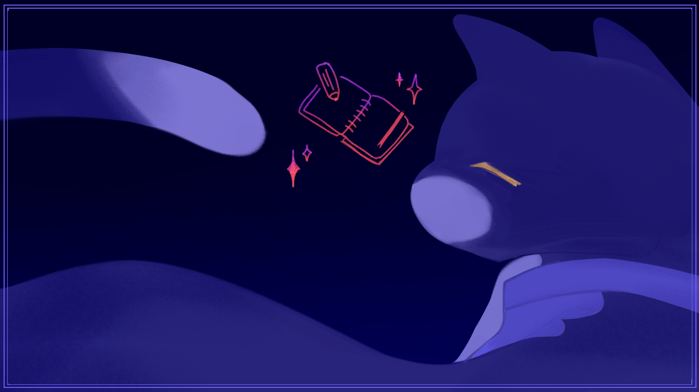

Project Overview
What it does
Bilbo is designed to act like a personal household assistant. It stores useful memories, keeps conversational context over time, and is built to help with daily planning, reminders, and recurring life logistics.
AI Personal Assistant
A butler-style assistant that keeps track of personal context, remembers important details, and responds through chat with a calmer, more human interface than a standard bot.

Project Overview
Bilbo is designed to act like a personal household assistant. It stores useful memories, keeps conversational context over time, and is built to help with daily planning, reminders, and recurring life logistics.
Current Interface
The current implementation handles Discord messages, verifies incoming interactions, stores chat history, and replies in a polished butler voice while extracting information worth remembering.
Key Pieces
Bilbo can create, edit, and delete stored memories so future replies can use details from prior conversations.
The project is set up around day-to-day assistance, including calendar events, reminders, and brief-style summaries.
A Hono backend exposes memory APIs, making it possible to manage the assistant's stored context outside the chat flow.
Weather data can be summarized and stored as memory entries so Bilbo can factor that into daily planning.

Design Goal
The project leans into personality on purpose. Instead of presenting Bilbo as a generic productivity tool, the goal is to make everyday planning feel a little more conversational, ambient, and alive.
Back to projects